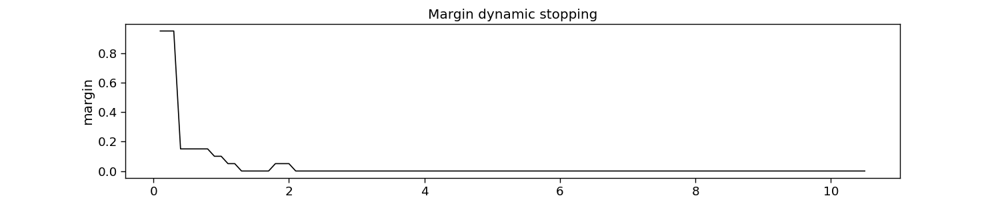
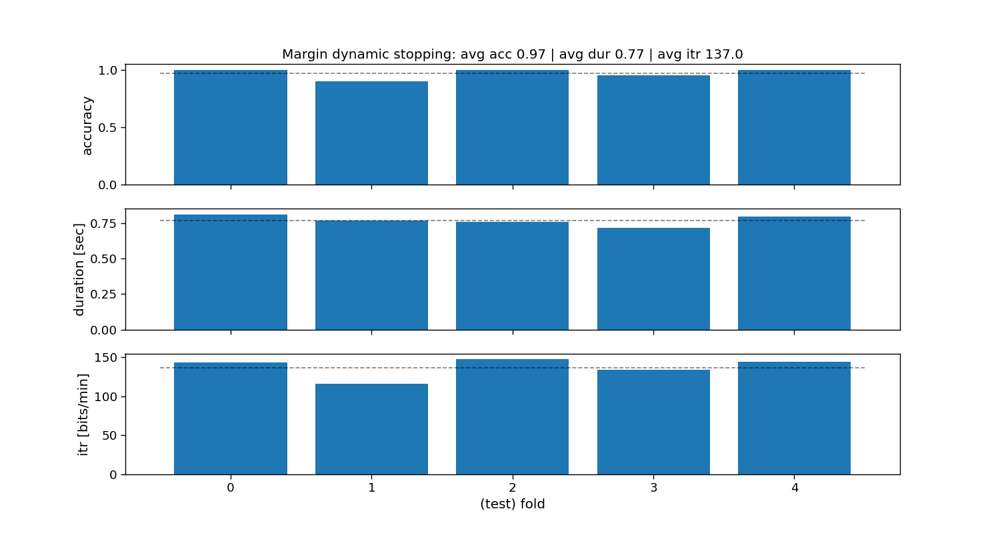

Note
Go to the end to download the full example code
Dynamic stopping
This script shows how to use dynamic stopping from PyntBCI for decoding c-VEP trials. Dynamic stopping refers to to adaptively determining when to stop the processing or decoding of a trial based on the reliability of the input data.
The data used in this script come from Thielen et al. (2021), see references [1] and [2].
References
import os
import matplotlib.pyplot as plt
import numpy as np
import seaborn
import pyntbci
seaborn.set_context("paper", font_scale=1.5)
Set the data path
The cell below specifies where the dataset has been downloaded to. Please, make sure it is set correctly according to the specification of your device. If none of the folder structures in the dataset were changed, the cells below should work just as fine.
path = os.path.join(os.path.dirname(pyntbci.__file__)) # path to the dataset
subject = "sub-01" # the subject to analyse
The data
The dataset consists of (1) the EEG data X that is a matrix of k trials, c channels, and m samples; (2) the labels y that is a vector of k trials; (3) the pseudo-random noise-codes V that is a matrix of n classes and m samples. Note, the codes are upsampled to match the EEG sampling frequency and contain only one code-cycle.
# Load data
fn = os.path.join(path, "data", f"thielen2021_{subject}.npz")
tmp = np.load(fn)
X = tmp["X"]
y = tmp["y"]
V = tmp["V"]
fs = tmp["fs"]
fr = 60
print("X", X.shape, "(trials x channels x samples)") # EEG
print("y", y.shape, "(trials)") # labels
print("V", V.shape, "(classes, samples)") # codes
print("fs", fs, "Hz") # sampling frequency
print("fr", fr, "Hz") # presentation rate
# Extract data dimensions
n_trials, n_channels, n_samples = X.shape
n_classes = V.shape[0]
# Read cap file
capfile = os.path.join(path, "capfiles", "thielen8.loc")
with open(capfile, "r") as fid:
channels = []
for line in fid.readlines():
channels.append(line.split("\t")[-1].strip())
print("Channels:", ", ".join(channels))
# Visualize EEG data
i_trial = 0 # the trial to visualize
plt.figure(figsize=(15, 5))
plt.plot(np.arange(0, n_samples) / fs, 25e-6 * np.arange(n_channels) + X[i_trial, :, :].T)
plt.xlim([0, 1]) # limit to 1 second EEG data
plt.yticks(25e-6 * np.arange(n_channels), channels)
plt.xlabel("time [sec]")
plt.ylabel("channel")
plt.title(f"Single-trial multi-channel EEG time-series (trial {i_trial})")
plt.tight_layout()
# Visualize labels
plt.figure(figsize=(15, 3))
hist = np.histogram(y, bins=np.arange(n_classes + 1))[0]
plt.bar(np.arange(n_classes), hist)
plt.xticks(np.arange(n_classes))
plt.xlabel("label")
plt.ylabel("count")
plt.title("Single-trial labels")
plt.tight_layout()
# Visualize codes
Vup = V.repeat(20, axis=1) # upsample to better visualize the sharp edges
plt.figure(figsize=(15, 8))
plt.plot(np.arange(Vup.shape[1]) / (20 * fs), 2 * np.arange(n_classes) + Vup.T)
for i in range(1 + int(V.shape[1] / (fs / fr))):
plt.axvline(i / fr, c="k", alpha=0.1)
plt.yticks(2 * np.arange(n_classes), np.arange(n_classes))
plt.xlabel("time [sec]")
plt.ylabel("code")
plt.title("Code time-series")
plt.tight_layout()
# ##
# Settings
# --------
# Some general settings for the following sections
# Set trial duration
trialtime = 4.2 # limit trials to a certain duration in seconds
intertrialtime = 1.0 # ITI in seconds for computing ITR
n_samples = int(trialtime * fs)
# Setup rCCA
transient_size = 0.3
onset_event = True
# Set stopping
segmenttime = 0.1
n_segments = int(trialtime / segmenttime)
# Set chronological cross-validation
n_folds = 5
folds = np.repeat(np.arange(n_folds), int(n_trials / n_folds))
X (100, 8, 2520) (trials x channels x samples)
y (100,) (trials)
V (20, 504) (classes, samples)
fs 240 Hz
fr 60 Hz
Channels: Fpz, T7, O1, POz, Oz, Iz, O2, T8
Margin dynamic stopping
The margin method learns threshold margins (i.e., the difference between the best and second best score) to stop. These margins are defined as such that a targeted accuracy is reached.
References:
# Target accuracy
target_p = 0.95 ** (1 / n_segments)
# Fit classifier
rcca = pyntbci.classifiers.rCCA(codes=V, fs=fs, event="duration", transient_size=transient_size,
onset_event=onset_event, score_metric="correlation")
margin = pyntbci.stopping.MarginStopping(rcca, segmenttime, fs, target_p=target_p, max_time=trialtime)
margin.fit(X, y)
# Plot dynamic stopping
plt.figure(figsize=(15, 3))
plt.plot(np.arange(1, 1 + margin.margins_.size) * segmenttime, margin.margins_, c="k")
plt.xlabel("time [sec]")
plt.ylabel("margin")
plt.title("margin dynamic stopping")
# Loop folds
accuracy_margin = np.zeros(n_folds)
duration_margin = np.zeros(n_folds)
for i_fold in range(n_folds):
# Split data to train and valid set
X_trn, y_trn = X[folds != i_fold, :, :n_samples], y[folds != i_fold]
X_tst, y_tst = X[folds == i_fold, :, :n_samples], y[folds == i_fold]
# Train template-matching classifier
rcca = pyntbci.classifiers.rCCA(codes=V, fs=fs, event="duration", transient_size=transient_size,
onset_event=onset_event, score_metric="correlation")
margin = pyntbci.stopping.MarginStopping(rcca, segmenttime, fs, target_p=target_p)
margin.fit(X_trn, y_trn)
# Loop segments
yh_tst = np.zeros(X_tst.shape[0])
dur_tst = np.zeros(X_tst.shape[0])
for i_segment in range(n_segments):
# Apply template-matching classifier
tmp = margin.predict(X_tst[:, :, :int((1 + i_segment) * segmenttime * fs)])
# Check stopped
idx = np.logical_and(tmp >= 0, dur_tst == 0)
yh_tst[idx] = tmp[idx]
dur_tst[idx] = (1 + i_segment) * segmenttime
if np.all(dur_tst > 0):
break
# Compute accuracy
accuracy_margin[i_fold] = np.mean(yh_tst == y_tst)
duration_margin[i_fold] = np.mean(dur_tst)
# Compute ITR
itr_margin = pyntbci.utilities.itr(n_classes, accuracy_margin, duration_margin + intertrialtime)
# Plot accuracy (over folds)
fig, ax = plt.subplots(3, 1, figsize=(15, 8), sharex=True)
ax[0].bar(np.arange(n_folds), accuracy_margin)
ax[0].hlines(np.mean(accuracy_margin), -.5, n_folds - 0.5, linestyle='--', color="k", alpha=0.5)
ax[1].bar(np.arange(n_folds), duration_margin)
ax[1].hlines(np.mean(duration_margin), -.5, n_folds - 0.5, linestyle='--', color="k", alpha=0.5)
ax[2].bar(np.arange(n_folds), itr_margin)
ax[2].hlines(np.mean(itr_margin), -.5, n_folds - 0.5, linestyle='--', color="k", alpha=0.5)
ax[2].set_xlabel("(test) fold")
ax[0].set_ylabel("accuracy")
ax[1].set_ylabel("duration [sec]")
ax[2].set_ylabel("itr [bits/min]")
ax[0].set_title(f"margin dynamic stopping: avg acc {accuracy_margin.mean():.2f} | " +
f"avg dur {duration_margin.mean():.2f} | avg itr {itr_margin.mean():.1f}")
# Print accuracy (average and standard deviation over folds)
print("Margin:")
print(f"\tAccuracy: avg={accuracy_margin.mean():.2f} with std={accuracy_margin.std():.2f}")
print(f"\tDuration: avg={duration_margin.mean():.2f} with std={duration_margin.std():.2f}")
print(f"\tITR: avg={itr_margin.mean():.1f} with std={itr_margin.std():.2f}")
Margin:
Accuracy: avg=0.97 with std=0.04
Duration: avg=0.77 with std=0.03
ITR: avg=137.0 with std=11.36
Beta dynamic stopping
The beta method fits a beta distribution to the non-maximum scores (i.e., if correlation, then correlation+1)/2), and tests the probability of the maximum correlation to belong to that beta distribution.
References:
# Target accuracy
target_p = 0.95 ** (1 / n_segments)
# Loop folds
accuracy_beta = np.zeros(n_folds)
duration_beta = np.zeros(n_folds)
for i_fold in range(n_folds):
# Split data to train and valid set
X_trn, y_trn = X[folds != i_fold, :, :n_samples], y[folds != i_fold]
X_tst, y_tst = X[folds == i_fold, :, :n_samples], y[folds == i_fold]
# Train template-matching classifier
rcca = pyntbci.classifiers.rCCA(codes=V, fs=fs, event="duration", transient_size=transient_size,
onset_event=onset_event, score_metric="correlation")
beta = pyntbci.stopping.BetaStopping(rcca, target_p=target_p, fs=fs, max_time=trialtime)
beta.fit(X, y)
# Loop segments
yh_tst = np.zeros(X_tst.shape[0])
dur_tst = np.zeros(X_tst.shape[0])
for i_segment in range(n_segments):
# Apply template-matching classifier
tmp = beta.predict(X_tst[:, :, :int((1 + i_segment) * segmenttime * fs)])
# Check stopped
idx = np.logical_and(tmp >= 0, dur_tst == 0)
yh_tst[idx] = tmp[idx]
dur_tst[idx] = (1 + i_segment) * segmenttime
if np.all(dur_tst > 0):
break
# Compute accuracy
accuracy_beta[i_fold] = np.mean(yh_tst == y_tst)
duration_beta[i_fold] = np.mean(dur_tst)
# Compute ITR
itr_beta = pyntbci.utilities.itr(n_classes, accuracy_beta, duration_beta + intertrialtime)
# Plot accuracy (over folds)
fig, ax = plt.subplots(3, 1, figsize=(15, 8), sharex=True)
ax[0].bar(np.arange(n_folds), accuracy_beta)
ax[0].hlines(np.mean(accuracy_beta), -.5, n_folds - 0.5, linestyle='--', color="k", alpha=0.5)
ax[1].bar(np.arange(n_folds), duration_beta)
ax[1].hlines(np.mean(duration_beta), -.5, n_folds - 0.5, linestyle='--', color="k", alpha=0.5)
ax[2].bar(np.arange(n_folds), itr_beta)
ax[2].hlines(np.mean(itr_beta), -.5, n_folds - 0.5, linestyle='--', color="k", alpha=0.5)
ax[2].set_xlabel("(test) fold")
ax[0].set_ylabel("accuracy")
ax[1].set_ylabel("duration [sec]")
ax[2].set_ylabel("itr [bits/min]")
ax[0].set_title(f"beta dynamic stopping: avg acc {accuracy_beta.mean():.2f} | " +
f"avg dur {duration_beta.mean():.2f} | avg itr {itr_beta.mean():.1f}")
# Print accuracy (average and standard deviation over folds)
print("Beta:")
print(f"\tAccuracy: avg={accuracy_beta.mean():.2f} with std={accuracy_beta.std():.2f}")
print(f"\tDuration: avg={duration_beta.mean():.2f} with std={duration_beta.std():.2f}")
print(f"\tITR: avg={itr_beta.mean():.1f} with std={itr_beta.std():.2f}")
Beta:
Accuracy: avg=0.91 with std=0.07
Duration: avg=1.05 with std=0.16
ITR: avg=103.9 with std=14.06
Bayesian dynamic stopping (BES0)
The Bayesian method fits Gaussian distributions for target and non-target responses, and calculates a stopping threshold using these and a cost criterion. This method comes in three flavours: bes0, bes1, and bes2.
References:
# Cost ratio and target probabilities
cr = 1.0
# Fit classifier
rcca = pyntbci.classifiers.rCCA(codes=V, fs=fs, event="duration", transient_size=transient_size,
onset_event=onset_event, score_metric="inner")
bayes = pyntbci.stopping.BayesStopping(rcca, segmenttime, fs, cr=cr, max_time=trialtime)
bayes.fit(X, y)
# Plot dynamic stopping
fig, ax = plt.subplots(2, 1, figsize=(15, 4), sharex=True)
ax[0].plot(np.arange(1, 1 + bayes.eta_.size) * segmenttime, bayes.eta_, c="k", label="eta")
ax[0].plot(np.arange(1, 1 + bayes.eta_.size) * segmenttime, bayes.alpha_ * bayes.b0_, "--b", label="b0")
ax[0].plot(np.arange(1, 1 + bayes.eta_.size) * segmenttime, bayes.alpha_ * bayes.b1_, "--g", label="b1")
ax[0].plot(np.arange(1, 1 + bayes.eta_.size) * segmenttime, bayes.alpha_ * bayes.b0_ - bayes.s0_, "b")
ax[0].plot(np.arange(1, 1 + bayes.eta_.size) * segmenttime, bayes.alpha_ * bayes.b1_ - bayes.s1_, "g")
ax[0].plot(np.arange(1, 1 + bayes.eta_.size) * segmenttime, bayes.alpha_ * bayes.b0_ + bayes.s0_, "b")
ax[0].plot(np.arange(1, 1 + bayes.eta_.size) * segmenttime, bayes.alpha_ * bayes.b1_ + bayes.s1_, "g")
ax[0].legend()
ax[1].plot(np.arange(1, 1 + bayes.eta_.size) * segmenttime, bayes.pf_, label="pf")
ax[1].plot(np.arange(1, 1 + bayes.eta_.size) * segmenttime, bayes.pm_, label="pm")
ax[1].legend()
ax[1].set_xlabel("time [sec]")
ax[0].set_title("Bayesian dynamic stopping")
# Loop folds
accuracy_bes0 = np.zeros(n_folds)
duration_bes0 = np.zeros(n_folds)
for i_fold in range(n_folds):
# Split data to train and valid set
X_trn, y_trn = X[folds != i_fold, :, :n_samples], y[folds != i_fold]
X_tst, y_tst = X[folds == i_fold, :, :n_samples], y[folds == i_fold]
# Train template-matching classifier
rcca = pyntbci.classifiers.rCCA(codes=V, fs=fs, event="duration", transient_size=transient_size,
onset_event=onset_event, score_metric="inner")
bayes = pyntbci.stopping.BayesStopping(rcca, segmenttime, fs, method="bes0", cr=cr, max_time=trialtime)
bayes.fit(X_trn, y_trn)
# Apply template-matching classifier
yh_tst = np.zeros(X_tst.shape[0])
dur_tst = np.zeros(X_tst.shape[0])
for i_segment in range(n_segments):
tmp = bayes.predict(X_tst[:, :, :int((1 + i_segment) * segmenttime * fs)])
idx = np.logical_and(tmp >= 0, dur_tst == 0)
yh_tst[idx] = tmp[idx]
dur_tst[idx] = (1 + i_segment) * segmenttime
if np.all(dur_tst > 0):
break
# Compute accuracy
accuracy_bes0[i_fold] = np.mean(yh_tst == y_tst)
duration_bes0[i_fold] = np.mean(dur_tst)
# Compute ITR
itr_bes0 = pyntbci.utilities.itr(n_classes, accuracy_bes0, duration_bes0 + intertrialtime)
# Plot accuracy (over folds)
fig, ax = plt.subplots(3, 1, figsize=(15, 8), sharex=True)
ax[0].bar(np.arange(n_folds), accuracy_bes0)
ax[0].hlines(np.mean(accuracy_bes0), -.5, n_folds - 0.5, linestyle='--', color="k", alpha=0.5)
ax[1].bar(np.arange(n_folds), duration_bes0)
ax[1].hlines(np.mean(duration_bes0), -.5, n_folds - 0.5, linestyle='--', color="k", alpha=0.5)
ax[2].bar(np.arange(n_folds), itr_bes0)
ax[2].hlines(np.mean(itr_bes0), -.5, n_folds - 0.5, linestyle='--', color="k", alpha=0.5)
ax[2].set_xlabel("(test) fold")
ax[0].set_ylabel("accuracy")
ax[1].set_ylabel("duration [sec]")
ax[2].set_ylabel("itr [bits/min]")
ax[0].set_title(f"bes0 dynamic stopping: avg acc {accuracy_bes0.mean():.2f} | " +
f"avg dur {duration_bes0.mean():.2f} | avg itr {itr_bes0.mean():.1f}")
# Print accuracy (average and standard deviation over folds)
print("BES0:")
print(f"\tAccuracy: avg={accuracy_bes0.mean():.2f} with std={accuracy_bes0.std():.2f}")
print(f"\tDuration: avg={duration_bes0.mean():.2f} with std={duration_bes0.std():.2f}")
print(f"\tITR: avg={itr_bes0.mean():.1f} with std={itr_bes0.std():.2f}")
- 
- 
BES0:
Accuracy: avg=0.96 with std=0.04
Duration: avg=1.45 with std=0.25
ITR: avg=97.0 with std=6.02
Bayesian dynamic stopping (BES1)
The Bayesian method fits Gaussian distributions for target and non-target responses, and calculates a stopping threshold using these and a cost criterion. This method comes in three flavours: bes0, bes1, and bes2.
References:
# Cost ratio and target probabilities
cr = 1.0
target_pf = 0.05
target_pd = 0.80
# Loop folds
accuracy_bes1 = np.zeros(n_folds)
duration_bes1 = np.zeros(n_folds)
for i_fold in range(n_folds):
# Split data to train and valid set
X_trn, y_trn = X[folds != i_fold, :, :n_samples], y[folds != i_fold]
X_tst, y_tst = X[folds == i_fold, :, :n_samples], y[folds == i_fold]
# Train template-matching classifier
rcca = pyntbci.classifiers.rCCA(codes=V, fs=fs, event="duration", transient_size=transient_size,
onset_event=onset_event, score_metric="inner")
bayes = pyntbci.stopping.BayesStopping(rcca, segmenttime, fs, method="bes1", cr=cr, target_pf=target_pf,
target_pd=target_pd, max_time=trialtime)
bayes.fit(X_trn, y_trn)
# Apply template-matching classifier
yh_tst = np.zeros(X_tst.shape[0])
dur_tst = np.zeros(X_tst.shape[0])
for i_segment in range(n_segments):
tmp = bayes.predict(X_tst[:, :, :int((1 + i_segment) * segmenttime * fs)])
idx = np.logical_and(tmp >= 0, dur_tst == 0)
yh_tst[idx] = tmp[idx]
dur_tst[idx] = (1 + i_segment) * segmenttime
if np.all(dur_tst > 0):
break
# Compute accuracy
accuracy_bes1[i_fold] = np.mean(yh_tst == y_tst)
duration_bes1[i_fold] = np.mean(dur_tst)
# Compute ITR
itr_bes1 = pyntbci.utilities.itr(n_classes, accuracy_bes1, duration_bes1 + intertrialtime)
# Plot accuracy (over folds)
fig, ax = plt.subplots(3, 1, figsize=(15, 8), sharex=True)
ax[0].bar(np.arange(n_folds), accuracy_bes1)
ax[0].hlines(np.mean(accuracy_bes1), -.5, n_folds - 0.5, linestyle='--', color="k", alpha=0.5)
ax[1].bar(np.arange(n_folds), duration_bes1)
ax[1].hlines(np.mean(duration_bes1), -.5, n_folds - 0.5, linestyle='--', color="k", alpha=0.5)
ax[2].bar(np.arange(n_folds), itr_bes1)
ax[2].hlines(np.mean(itr_bes1), -.5, n_folds - 0.5, linestyle='--', color="k", alpha=0.5)
ax[2].set_xlabel("(test) fold")
ax[0].set_ylabel("accuracy")
ax[1].set_ylabel("duration [sec]")
ax[2].set_ylabel("itr [bits/min]")
ax[0].set_title(f"bes1 dynamic stopping: avg acc {accuracy_bes1.mean():.2f} | " +
f"avg dur {duration_bes1.mean():.2f} | avg itr {itr_bes1.mean():.1f}")
# Print accuracy (average and standard deviation over folds)
print("BES1:")
print(f"\tAccuracy: avg={accuracy_bes1.mean():.2f} with std={accuracy_bes1.std():.2f}")
print(f"\tDuration: avg={duration_bes1.mean():.2f} with std={duration_bes1.std():.2f}")
print(f"\tITR: avg={itr_bes1.mean():.1f} with std={itr_bes1.std():.2f}")
BES1:
Accuracy: avg=1.00 with std=0.00
Duration: avg=1.63 with std=0.21
ITR: avg=99.2 with std=7.26
Bayesian dynamic stopping (BES2)
The Bayesian method fits Gaussian distributions for target and non-target responses, and calculates a stopping threshold using these and a cost criterion. This method comes in three flavours: bes0, bes1, and bes2.
References:
# Cost ratio and target probabilities
cr = 1.0
target_pf = 0.05
target_pd = 0.80
# Loop folds
accuracy_bes2 = np.zeros(n_folds)
duration_bes2 = np.zeros(n_folds)
for i_fold in range(n_folds):
# Split data to train and valid set
X_trn, y_trn = X[folds != i_fold, :, :n_samples], y[folds != i_fold]
X_tst, y_tst = X[folds == i_fold, :, :n_samples], y[folds == i_fold]
# Train template-matching classifier
rcca = pyntbci.classifiers.rCCA(codes=V, fs=fs, event="duration", transient_size=transient_size,
onset_event=onset_event, score_metric="inner")
bayes = pyntbci.stopping.BayesStopping(rcca, segmenttime, fs, method="bes2", cr=cr, target_pf=target_pf,
target_pd=target_pd, max_time=trialtime)
bayes.fit(X_trn, y_trn)
# Apply template-matching classifier
yh_tst = np.zeros(X_tst.shape[0])
dur_tst = np.zeros(X_tst.shape[0])
for i_segment in range(n_segments):
tmp = bayes.predict(X_tst[:, :, :int((1 + i_segment) * segmenttime * fs)])
idx = np.logical_and(tmp >= 0, dur_tst == 0)
yh_tst[idx] = tmp[idx]
dur_tst[idx] = (1 + i_segment) * segmenttime
if np.all(dur_tst > 0):
break
# Compute accuracy
accuracy_bes2[i_fold] = np.mean(yh_tst == y_tst)
duration_bes2[i_fold] = np.mean(dur_tst)
# Compute ITR
itr_bes2 = pyntbci.utilities.itr(n_classes, accuracy_bes2, duration_bes2 + intertrialtime)
# Plot accuracy (over folds)
fig, ax = plt.subplots(3, 1, figsize=(15, 8), sharex=True)
ax[0].bar(np.arange(n_folds), accuracy_bes2)
ax[0].hlines(np.mean(accuracy_bes2), -.5, n_folds - 0.5, linestyle='--', color="k", alpha=0.5)
ax[1].bar(np.arange(n_folds), duration_bes2)
ax[1].hlines(np.mean(duration_bes2), -.5, n_folds - 0.5, linestyle='--', color="k", alpha=0.5)
ax[2].bar(np.arange(n_folds), itr_bes2)
ax[2].hlines(np.mean(itr_bes2), -.5, n_folds - 0.5, linestyle='--', color="k", alpha=0.5)
ax[2].set_xlabel("(test) fold")
ax[0].set_ylabel("accuracy")
ax[1].set_ylabel("duration [sec]")
ax[2].set_ylabel("itr [bits/min]")
ax[0].set_title(f"bes2 dynamic stopping: avg acc {accuracy_bes2.mean():.2f} | " +
f"avg dur {duration_bes2.mean():.2f} | avg itr {itr_bes2.mean():.1f}")
# Print accuracy (average and standard deviation over folds)
print("BES2:")
print(f"\tAccuracy: avg={accuracy_bes2.mean():.2f} with std={accuracy_bes2.std():.2f}")
print(f"\tDuration: avg={duration_bes2.mean():.2f} with std={duration_bes2.std():.2f}")
print(f"\tITR: avg={itr_bes2.mean():.1f} with std={itr_bes2.std():.2f}")
BES2:
Accuracy: avg=0.96 with std=0.04
Duration: avg=1.36 with std=0.15
ITR: avg=100.2 with std=6.21
Overall comparison
Comparison of the presented stopping methods. Note, each of these use default parameters that might need fine-tuning. Additionally, the evaluation is performed on a single participant only.
# Plot accuracy
width = 0.8
fig, ax = plt.subplots(3, 1, figsize=(15, 8), sharex=True)
ax[0].bar(0, accuracy_margin.mean(), width=width, yerr=accuracy_margin.std(), label="margin")
ax[0].bar(1, accuracy_beta.mean(), width=width, yerr=accuracy_beta.std(), label="beta")
ax[0].bar(2, accuracy_bes0.mean(), width=width, yerr=accuracy_bes0.std(), label="bes0")
ax[0].bar(3, accuracy_bes1.mean(), width=width, yerr=accuracy_bes1.std(), label="bes1")
ax[0].bar(4, accuracy_bes2.mean(), width=width, yerr=accuracy_bes2.std(), label="bes2")
ax[1].bar(0, duration_margin.mean(), width=width, yerr=duration_margin.std(), label="margin")
ax[1].bar(1, duration_beta.mean(), width=width, yerr=duration_beta.std(), label="beta")
ax[1].bar(2, duration_bes0.mean(), width=width, yerr=duration_bes0.std(), label="bes0")
ax[1].bar(3, duration_bes1.mean(), width=width, yerr=duration_bes1.std(), label="bes1")
ax[1].bar(4, duration_bes2.mean(), width=width, yerr=duration_bes2.std(), label="bes2")
ax[2].bar(0, itr_margin.mean(), width=width, yerr=itr_margin.std(), label="margin")
ax[2].bar(1, itr_beta.mean(), width=width, yerr=itr_beta.std(), label="beta")
ax[2].bar(2, itr_bes0.mean(), width=width, yerr=itr_bes0.std(), label="bes0")
ax[2].bar(3, itr_bes1.mean(), width=width, yerr=itr_bes1.std(), label="bes1")
ax[2].bar(4, itr_bes2.mean(), width=width, yerr=itr_bes2.std(), label="bes2")
ax[2].set_xticks(np.arange(5), ["margin", "beta", "bes0", "bes1", "bes2"])
ax[2].set_xlabel("dynamic stopping method")
ax[0].set_ylabel("accuracy")
ax[1].set_ylabel("duration [sec]")
ax[2].set_ylabel("itr [bits/min]")
ax[1].legend(bbox_to_anchor=(1.0, 1.0))
ax[0].set_title("comparison of dynamic stopping methods averaged across folds")
# plt.show()
Text(0.5, 1.0, 'comparison of dynamic stopping methods averaged across folds')
Total running time of the script: (0 minutes 18.461 seconds)